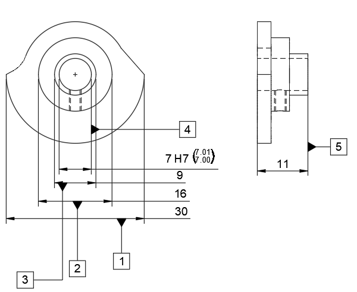

FAI_VERIFICATION_REPORT
Cam Disc (Knast) // CNC Verification
Report_ID
FAI-02-CAMDISC
Date: 18.03.2026
Material_Spec
AISI_STAINLESS / GR5
Equipment_ID
MITUTOYO_25-50 / 0.001
Temp_Correction
20.0°C (STABLE)
Inspector
G. Cilinder-Hansen
// CTQ_Visual_Reference

| # | Characteristic_Description | Nominal | Actual | Status |
|---|---|---|---|---|
| 01 | Ydre Diameter | Ø 30.000 (±0.1) | 30.030 | PASS |
| 02 | Centerboring | Ø 7.000 (H7) | 7.005 | PASS |
| 03 | Emnetykkelse | 11.000 (±0.1) | 11.000 | Exact |